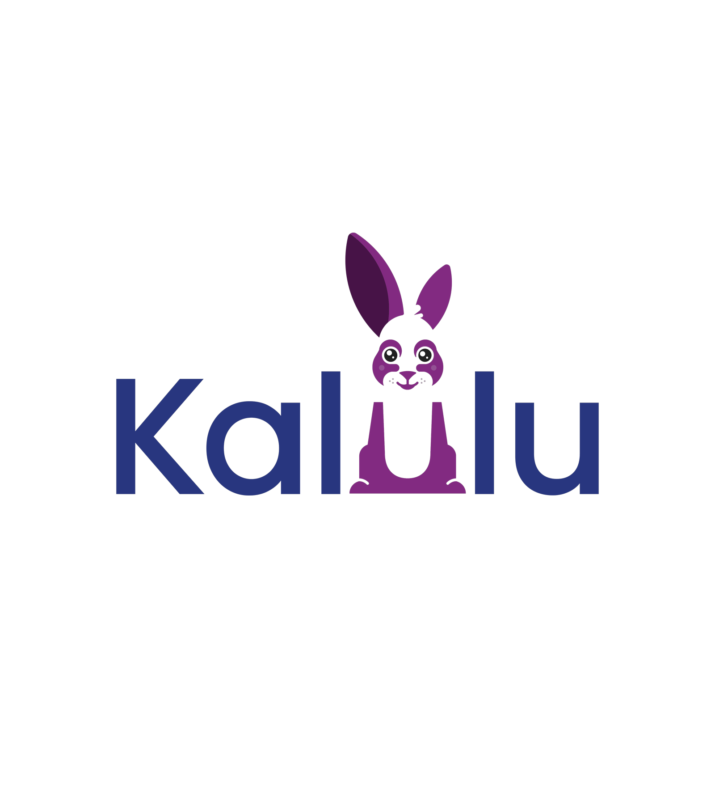

← Back to home
Kalulu
A free, science-based method so every child can learn to read
Kalulu is a citizen-science project that adapts a 100% phonics-based literacy method, grounded in scientific evidence, to Río de la Plata Spanish. Andrés is part of its interdisciplinary team.
Visit Kalulu's official site ↗
Get involved
Join the citizen-science project as a teacher to help improve literacy.
I want to get involved ↗Donations
Support the project. (Donation link to be confirmed.)
Visit the site ↗Materials
Workbooks, card games and teaching guides, free to download.
Download materials ↗Research
Open questions about reading: use of cursive, color, spacing and more.
View research ↗
Original production
Mini documentary in Arrecifes
A mini documentary filmed in Arrecifes with testimonials from children, mothers and teachers who took part in one of the method's first implementations.

On the Arrecifes miracle
Slide 01 / 05